| 日付 | 2025年12月28日（日） |
|---|---|
| 山域 | 奥武蔵 |
| メンバー | 家族（妻） |
| 山行形態 | 日帰り |
| アクセス | 車 |
| ルート (Map) | 法性寺駐車場 (8:39) - (8:46) 法性寺 - (9:33) 大日如来像 - (9:51) 般若山 - (10:31) 釜ノ沢五峰登山口 - (11:28) 釜ノ沢五峰 - (11:47) 無名峰 (12:31) - (13:29) 登山口 - (13:58) 法性寺駐車場 |
ここ最近、小鹿野アルプスというマイナーな山を知った。
岩場がところどころにある山ということで興味を持ち
年末の休日に行ってみることにする。
法性寺の駐車場に車を停める。標高270m。
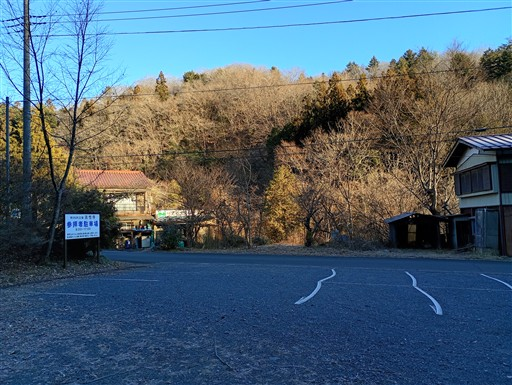
法性寺の立派な山門。
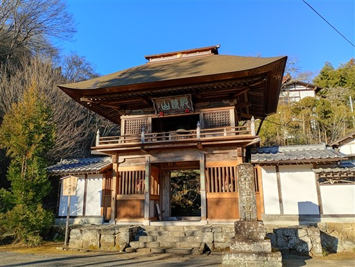
山門の側にトイレがあるので寄っていく。
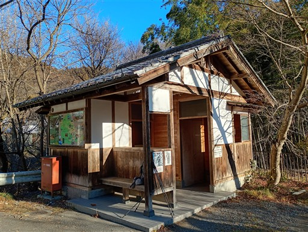
境内はきれいに整備されている。
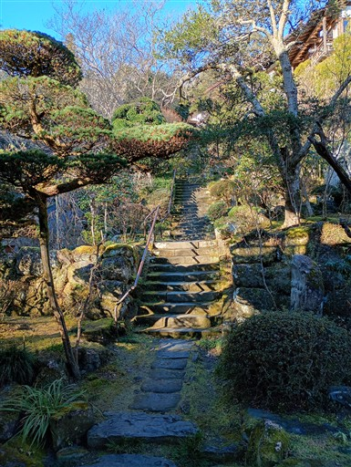
本堂は立派な建物だ。
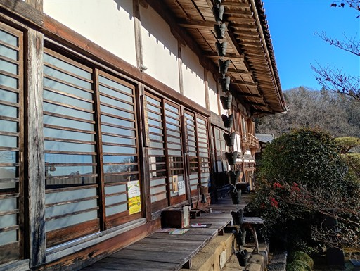
般若の面が掛けられている。般若はこの辺りの地名だ。
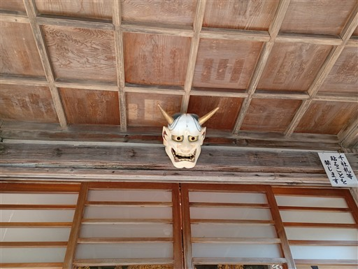
その先にある観音堂。木組みの土台の上に建っている。
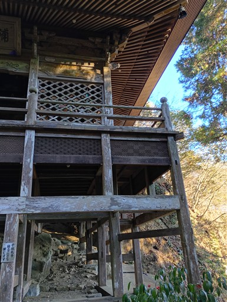
外にある建物なのだが、スリッパに履き替える必要がある。
登山靴だとちょっと面倒だ。
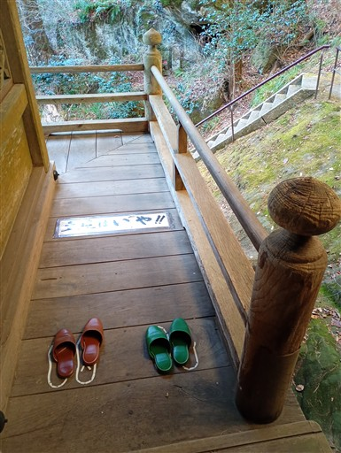
中の建物。千羽鶴がたくさん掛けられている。
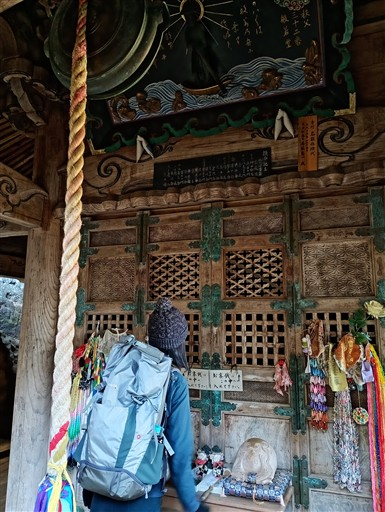
この観音堂は岩穴の中に半分入っている。
岩の表面は小さな穴が開いていてちょっと気持ち悪い。
タフォニと呼ばれる、風化穴らしい。
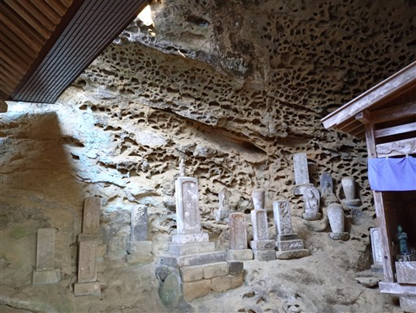
その先にある岩穴。特に標識は無いが胎内潜りだろうか？
かなり狭いが潜ってみる。
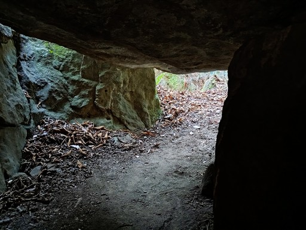
こちらも岩と岩の隙間にできたトンネルだ。
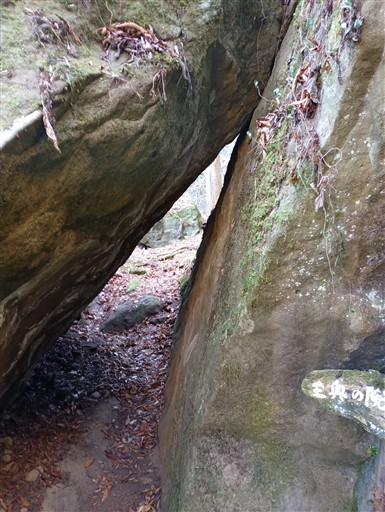
龍虎岩。穴に至る鎖がある。
岩は足を乗せられるように削られているので登りやすい。
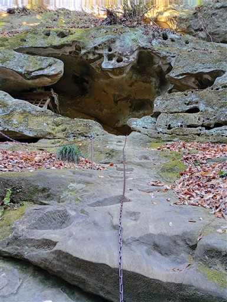
辿り着いた岩穴は狭いが小さな祠がある。
祠よりも目を引いたのが、ニョキっと飛び出るこの岩。
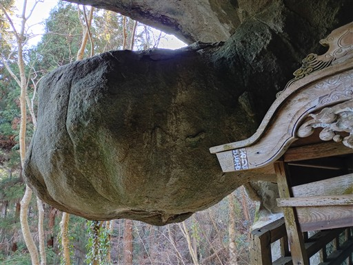
慎重に岩場を下りる。よく見たら穴の形はかなり複雑だ。
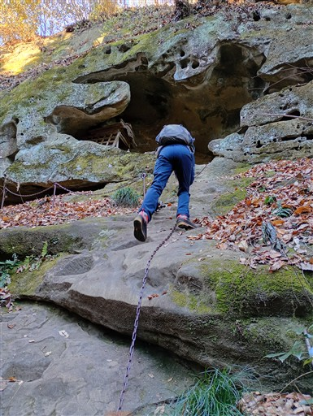
岩を削って造られた階段。周りは落ち葉が堆積しているが、
落ち葉と土をどけると、その下は全て岩盤なのだろうか？
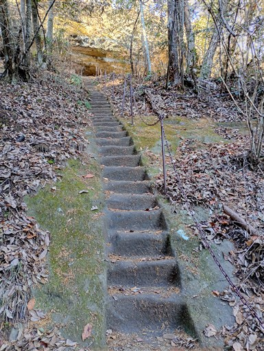
辿り着いた先の岩屋には石仏が並んでいる。
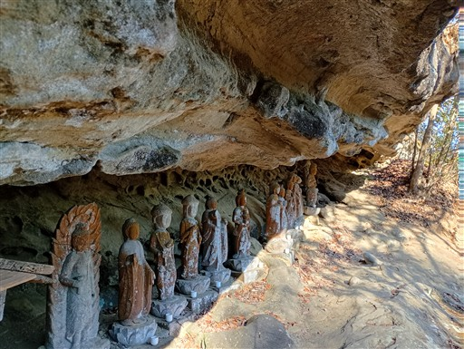
ちょっと狭くて頭をぶつけそうだ。
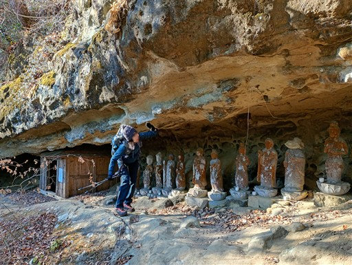
見晴らしの良い場所に出てくる。岩の上を歩いた先に、お船観音が安置されている。
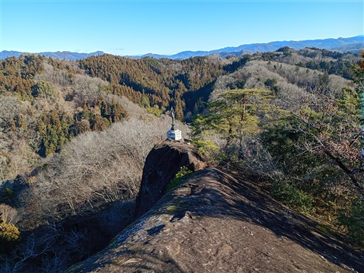
お船観音。
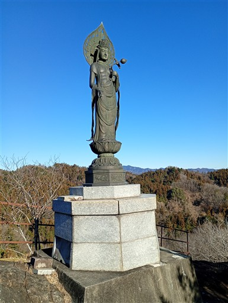
ここからの展望は素晴らしい。右端に見えているのは武甲山。
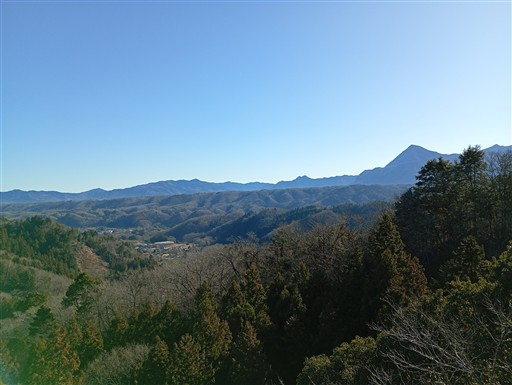
次は岩の上に祀られている大日如来を見学する。ここも鎖場だ。
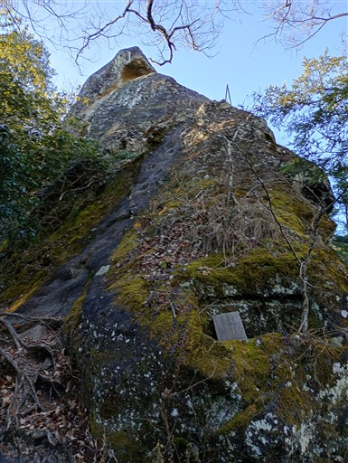
岩の上に祀られている大日如来像。
彫られた岩穴に安置されているのだが、狭くて全体像を撮影しにくい。
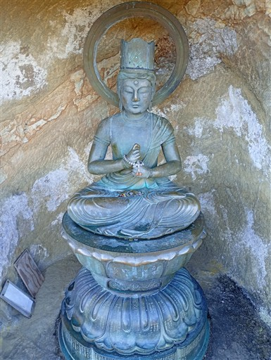
上から見下ろした様子。なぜかミカンが置かれている。
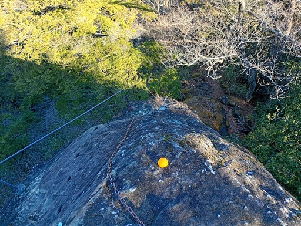
ここから先、分岐点を過ぎると少し道が細くなって歩きにくくなる。
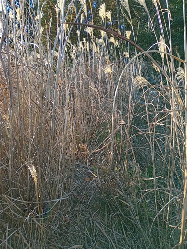
般若山に到着。小さな三角点があるだけで、山頂標識が見当たらない。
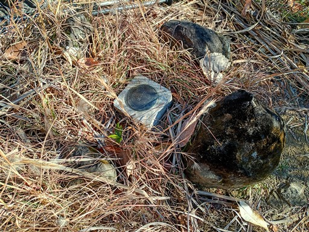
辛うじて両神山が見えているが、あまり展望は良くない。
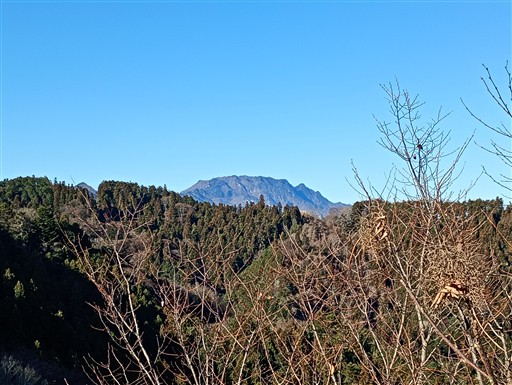
杉の幼木が登山道に張り出していて歩きにくい。
モミかトウヒも生えていて、刺さって痛い。
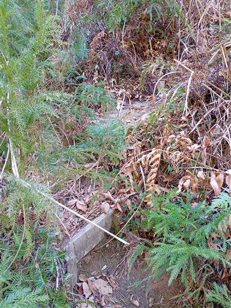
折り返して下山にかかる。素晴らしい展望の広がる尾根道だ。
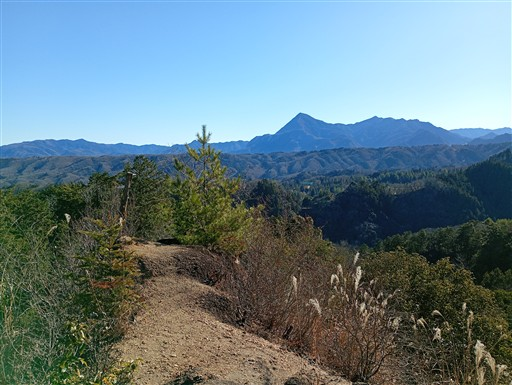
ところどころ岩盤が露出している。
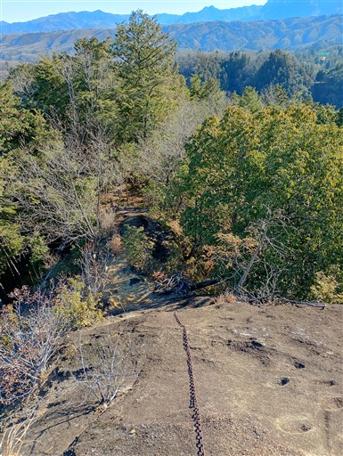
隣の尾根に大きな岩が見える。亀岩だ。
確かに亀の形をしている。かなり巨大な亀だ。

雨乞岩洞穴。大岩の下に小さな穴が開いている。
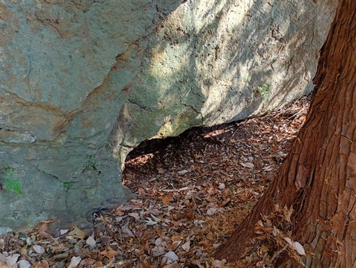
中を覗いてみると、奥はそこそこ広そうだ。
あまりにも入口が狭いので、入るのは自重した。
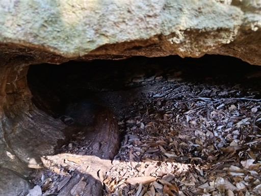
側に祠があるので、昔から知られていた洞穴なのだろう。
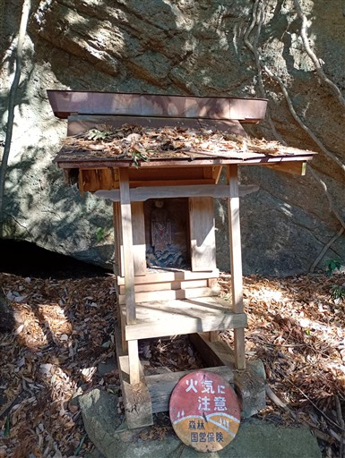
下山。本日はここから釜ノ沢五峰に再度登るルートだ。
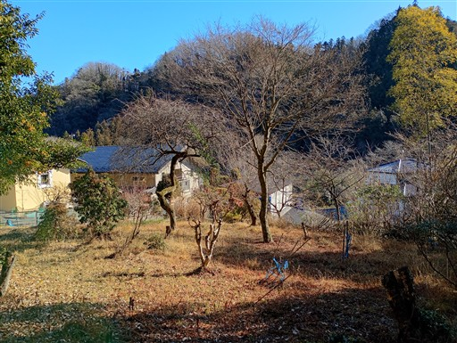
金精神社の標識に「五峰」の落書きが3つもある。
確かに金精神社は地図に載っておらず、五峰の表記の方がありがたい。
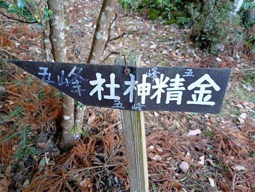
巨大な岩の上に鉄塔が建っている。
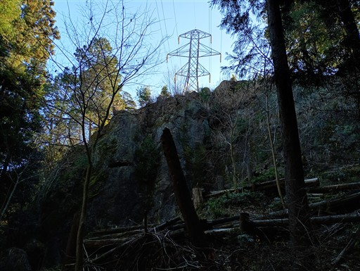
こちらも岩尾根だ。
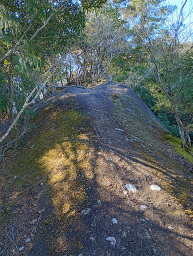
二峰に到着。一峰の標識は見逃した。
なぜか石には三峰と彫られている。
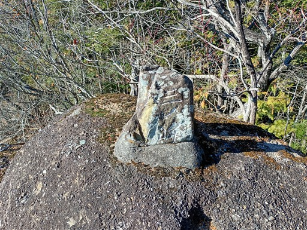
二峰からの展望。見えているのは東京と埼玉の県境の山々、酉谷山辺りだ。
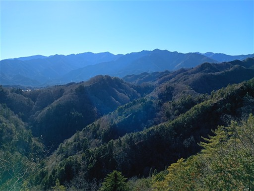
二峰の下りは岩場だ。
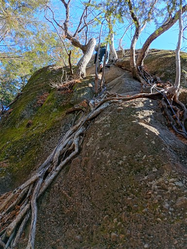
続いて三峰に到着。
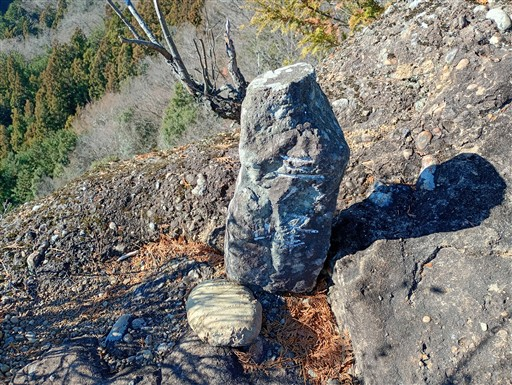
三峰からも好展望が得られる。手前の尾根に電線の無い鉄塔が見える。
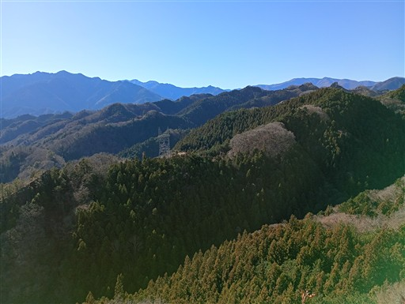
三峰の下りも岩場だ。
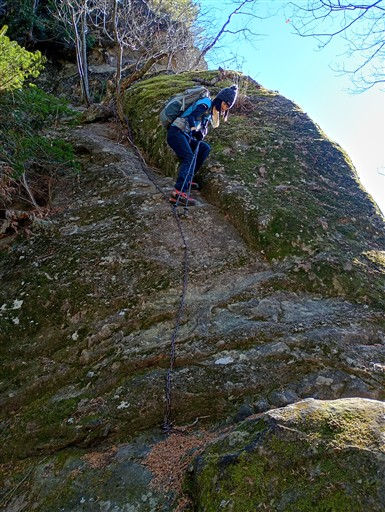
四峰を過ぎ、五峰に到着。さして展望は広がらず、二、三峰の方が好展望だ。
ここで昼食休憩を取ろうと考えていたが、冴えない場所のため先に進むことにする。
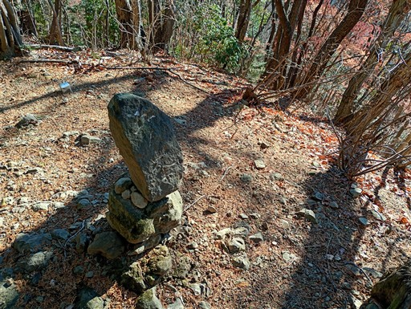
歩きやすい尾根道になる。
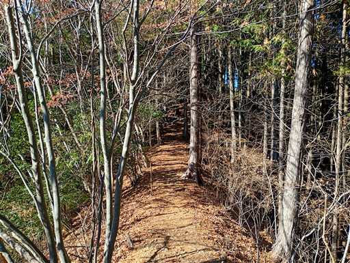
尾根から少し下にある小さな祠。
正月の準備がされていて、きちんと手入れされているようだ。
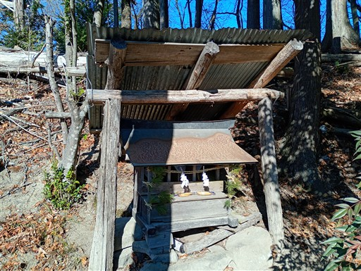
この辺りは杉の幼木が並んでいるのだが、なぜかほとんどが茶色く変色している。
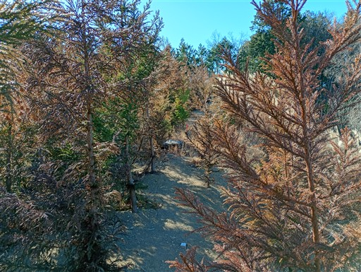
右手にひときわ目立つ山は二子山。
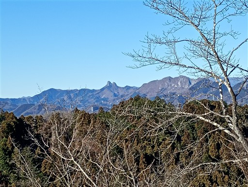
展望の良いピークに到着。地図にも標識にも名前が載っていない。
明るく開けた場所なので、ここで昼食休憩を取ることにする。
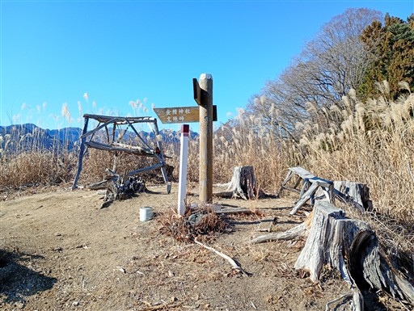
右手に見えるのは埼玉の名峰・両神山。
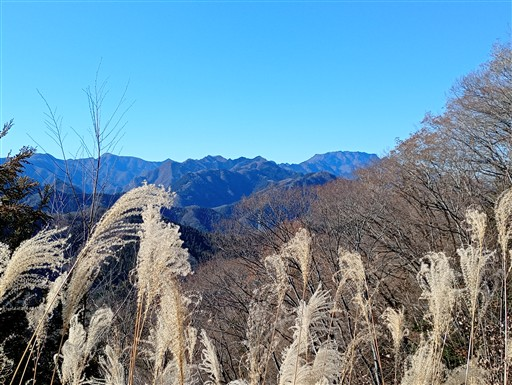
こちらは和名倉山。
武甲山～大持山。
遠く男体山も見えている。非常に展望の良いピークで無名峰にしておくのはもったいない。
昼食を取ったら、先に進む。
中ノ沢ノ頭に到着。標高590m。
おそらくここが本日の最高峰。展望は全くなく、冴えない山頂だ。
下山中の尾根上にある小ピーク、竜神山を通過。
登山道の横にずっとビニールテープが張られている。
顔の位置にあり、風になびいている場所もあってちょっと鬱陶しい。
巨大鉄塔が出てくる。三峰から眺めた鉄塔だ。
ここの登りはちょっとした岩尾根。
賽ノ洞窟。ここも法性寺・観音堂にあったタフォニが少し見られる。
尾根を下っていくと岩が現れる。
右と左を見たが巻道はなく、岩を直登するルートのようだ。
兎岩に到着。
平らな岩盤の上を下る。少々過剰な気もするが、安全のため両サイドに鎖がある。
車道に無事下山。登山口はすごく分かりにくい。
ピンクリボンと、ほとんど読めなくなった標識が目印だ。
ここからは長い林道歩き。
釜ノ沢五峰登山口を通過する。
この登山道は私設である旨が書かれている。
鎖の設置なども個人で実施されたのだろうか？ありがたい話だ。
これは、、、火の見櫓？今でも使われているのだろうか？
鉄工所にあったガンダムの頭。
秩父大神社を通過して、駐車場に戻る。
小鹿野アルプスは短い登山道ながらも見所がたくさんあり、
登山道も岩場を中心に楽しい場所が多く、非常に良い山だった。
一組の団体登山者と出会っただけの静かな山だったが、もっと人気が出てもよいコースだと思う。